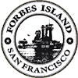

|  | Welcome to Forbes Island |
Forbes Thor Kiddoo came to San Francisco in 1959 after a stint in the Coast Guard. A carpenter and engineer, he developed a business constructing houseboats in Sausalito. Then, inspired by Jules Verne’s Captain Nemo and the movie version of “20,000 Leagues Under The Sea”, Forbes Kiddoo built himself an underwater home, complete with potholes for watching the fish swim past and underwater diving hatch, and a grand bedroom suite fit for a captain of his own private world. In the 90’s Forbes added a 40 foot lighthouse and a white picket fence.
Today, Forbes Island is unique event venue located at Holland Riverside Marina in Brentwood, California. Host your event with us today!
a
Dine underwater among antique nautifacts, a large fireplace, full bar and underwater portholes. The Main Dining Salon is ideal for larger groups.
Seating Capacity: 50
Have your banquet under giant palm trees in a thatched beach hut with bamboo walls and Polynesian decor. Wonderful delta views. This room can be used as a dance floor with a DJ.
Seating Capacity: 25
Have your banquet under giant palm trees in a thatched beach hut with bamboo walls and Polynesian decor. Wonderful delta views. This room can be used as a dance floor with a DJ.
Capacity: 6
To make a reservation, please email us at reservations@forbesisland.com
Event date(s)
Event organizer
Number of Attendees
Special Requests
Phone: 650 773 6419
Email: info@forbesisland.com
Physical Address:
FORBES ISLAND
Holland Riverside
7000 Holland Tract Rd
Brentwood, CA 94513
United States